Inicio / Sostenibilidad aplicada al sistema productivo / Tema 3
Material didáctico · Tema 3UT3. Los ODS en el desempeño profesional y personal
Esta unidad enseña a reconocer qué Objetivos de Desarrollo Sostenible (ODS) tienen que ver con el trabajo de un técnico de Sistemas Microinformáticos y Redes, qué riesgos y oportunidades suponen para las empresas y, sobre todo, qué acciones concretas están a tu alcance en el trabajo y en tu vida personal.
Descargar la presentación (PowerPoint, 180 KB)
0. Presentación de la unidad
Sesión teórica T1 (55 min): apartados 0 y 1 y los ODS de las esferas Personas y Prosperidad (2.1 a 2.3). Empieza con la Actividad 0 (5 min).
Resultado de aprendizaje 3. Establece la aplicación de criterios de sostenibilidad en el desempeño profesional y personal, identificando los ODS más relevantes para su actividad y las acciones a su alcance.
| CE | Qué tendrás que saber hacer | Teoría | Práctica | Cómo se evalúa |
|---|---|---|---|---|
| a | Identificar los ODS más relevantes para tu actividad profesional | T1, T2 | P1, P2 | Prueba escrita |
| b | Analizar los riesgos y las oportunidades que representan los ODS | T1 | P1 | Prueba escrita |
| c | Identificar acciones para atender retos ambientales y sociales desde tu trabajo y tu entorno personal | T2 | P2 | Caso práctico |
La unidad alterna una hora de teoría y una hora de práctica. En las sesiones teóricas (T1 y T2) se explican los apartados 0 a 3 con alguna pregunta flash de 2 minutos. Las actividades se hacen en las sesiones prácticas (P1 y P2, apartado 4); la última es el caso práctico del RA3.
Organización de las sesiones
| Sesión | Fecha | Tipo | Qué se hace | Producto |
|---|---|---|---|---|
| T1 | 17 nov | Teoría | Apartados 0 y 1; ODS de las esferas Personas (1-5) y Prosperidad (7-11) | — |
| P1 | 24 nov | Práctica | Riesgos y oportunidades de los ODS en una empresa TIC del valle | Ficha P1 (actividad de clase) |
| T2 | 1 dic | Teoría | ODS de Planeta, Paz y Alianzas; ODS más relevantes en SMR; apartado 3 (acciones) | Comprobación SMART (5 min) |
| P2 | 15 dic | Práctica | Autodiagnóstico y plan de acción personal | Ficha P2 (caso práctico, CE a, b y c) |
Mapa de la unidad
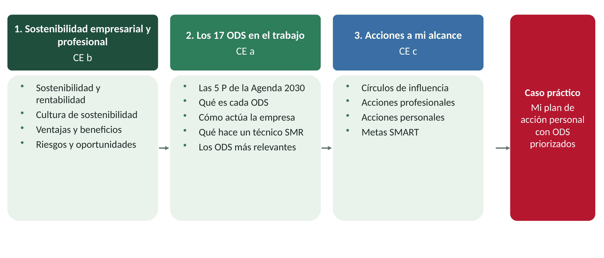
Situación de partida: los 17 logos de Nerea
Nerea, la técnica de SMR de la UT2, sigue trabajando en la tienda-taller de informática de Cabezuela del Valle. Esta semana ha llegado un correo de la cooperativa de cereza, su mejor cliente: desde el año que viene pedirá a todos sus proveedores que expliquen qué hacen por los ODS.
Andrés, el dueño del taller, le encarga la respuesta: «Pon los 17 logos de colores en la web y una frase bonita. Con eso basta».
Nerea no lo tiene claro. ¿Es suficiente con los logos? ¿Qué ODS tienen que ver de verdad con reparar ordenadores y montar redes? ¿Y qué podría hacer ella, en el taller y en su vida?
Actividad 0. ¿Qué sabemos ya? (5 minutos, por parejas, al empezar T1)
Responded brevemente y guardad las respuestas: las retomaremos al final de la unidad.
- ¿Qué son los ODS? Escribid todos los que recordéis de la UT1.
- ¿Qué os parece la propuesta de Andrés de poner los 17 logos en la web? ¿Por qué?
- Elegid dos ODS que creáis relacionados con el trabajo de un técnico de SMR y explicad por qué.
- Escribid una acción sostenible que ya hagáis en vuestro día a día.
1. La sostenibilidad empresarial y profesional
La sostenibilidad empresarial consiste en llevar a cabo la actividad de la empresa teniendo en cuenta criterios ambientales, sociales y de gobernanza (ASG), y no solo el beneficio económico.
Existe una correlación entre sostenibilidad y rentabilidad: las empresas que impulsan planes de sostenibilidad obtienen mejores resultados que sus competidores a medio y largo plazo. Si estas prácticas se mantienen en el tiempo, además, mejora mucho la imagen de la empresa ante los consumidores y la sociedad.
La sostenibilidad profesional es lo mismo aplicado a cada trabajador: tomar las decisiones de tu puesto pensando también en su impacto en las personas y en el planeta. Un técnico que amplía un equipo en lugar de sustituirlo, o que configura el ahorro de energía de toda una oficina, está aplicando criterios de sostenibilidad en su desempeño profesional.
Idea clave.
Ser sostenible no es un gasto extra: a medio plazo, también es rentable.
1.1. Sostenibilidad y rentabilidad: al principio cuesta, después compensa
Cuando una empresa pone en marcha políticas sostenibles tiene que asumir unos costes: equipos más eficientes, formación, cambios en los procesos. Al principio, esos costes reducen sus beneficios.
Después, gracias a la planificación y a la cultura de sostenibilidad implantada, los costes van disminuyendo, mientras que los beneficios económicos y sociales aumentan considerablemente. El trabajo bien hecho crea sinergias (efectos que se refuerzan entre sí) que dan un impulso a toda la actividad de la empresa.
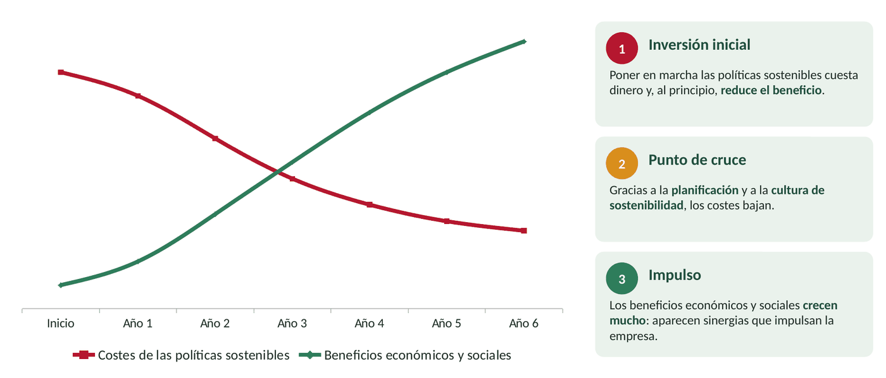
1.2. La cultura de sostenibilidad
La cultura de sostenibilidad es el conjunto de valores, hábitos y normas que hacen que toda la empresa, desde la dirección hasta el último empleado, trabaje de forma sostenible. Aplicarla aumenta el prestigio de la empresa ante sus clientes y ante toda la sociedad.
No basta con que lo decida la dirección: exige un trabajo constante en todos los departamentos. Por eso se recomienda crear un comité de sostenibilidad, que se encarga de tres tareas:
- Analizar los aspectos de la empresa que hay que mejorar y hacer propuestas para conseguirlo.
- Actuar: decidir las acciones concretas para que las mejoras se produzcan.
- Auditar: hacer revisiones periódicas para analizar, detectar fallos y, si hace falta, proponer cambios.
Para que toda la plantilla se sume, la empresa dispone de tres palancas:
- Ambiente favorable: la dirección favorece un ambiente saludable y el sentimiento de pertenencia al grupo.
- Capacitación de los empleados: la empresa les da la información y la formación necesarias para trabajar de forma sostenible.
- Campañas de concienciación: los trabajadores conocen qué acciones pueden hacer para aumentar la sostenibilidad.
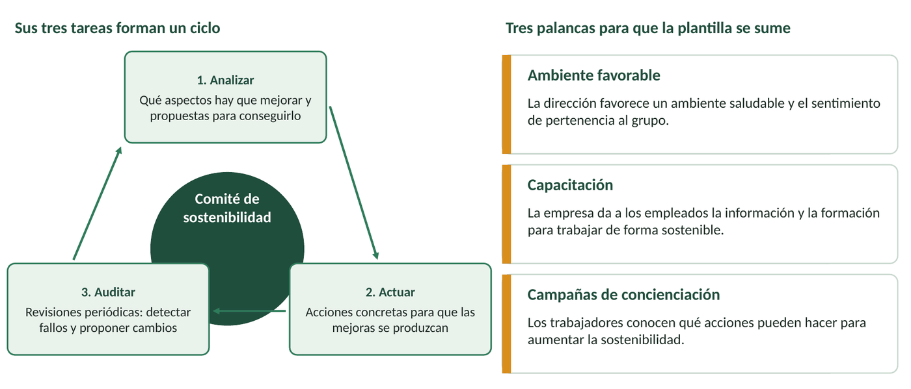
Un ejemplo. La empresa química Henkel, líder en sostenibilidad, resume su compromiso en un lema que conoce toda la plantilla. Un lema ayuda a que todos recuerden hacia dónde va la empresa. Además, el plan debe contar con el apoyo de instituciones públicas y organizaciones empresariales: por ejemplo, la Cámara de Comercio de España ofrece programas y ayudas de sostenibilidad para pymes.
Idea clave.
La sostenibilidad la hacen las personas: si la plantilla no la entiende, no funciona.
1.3. Ventajas de un plan de cultura de sostenibilidad
Al poner en marcha el plan, la empresa no debe pensar solo en el dinero (aunque lo tendrá en cuenta para funcionar): debe dar prioridad a los factores ambientales, sociales y de gobernanza. El éxito empresarial depende en gran medida de cómo se relaciona la empresa con el medio ambiente y con la población de su entorno, así que el plan debe incluir variables sociales y ambientales, no solo económicas.
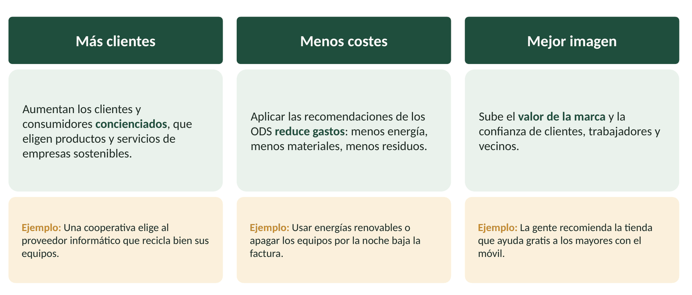
Antes de aplicar cada acción conviene analizar si se adapta a la organización y prever el beneficio que logrará, ya sea económico, social o ambiental.
1.4. Por qué los ODS importan a las empresas
Los ODS los acordaron los gobiernos de todo el mundo en la Agenda 2030, pero sin la colaboración de las empresas y de los profesionales no se pueden cumplir. Hacen un llamamiento a todas las organizaciones para que pongan su conocimiento, creatividad e innovación al servicio de los retos que estudiamos en la UT2.
Para las empresas son una oportunidad: desarrollar soluciones y tecnologías nuevas y tener una guía para minimizar sus impactos negativos y maximizar los positivos en las personas y en el planeta. Las empresas y los profesionales que hacen suyas las metas de los ODS obtienen cinco beneficios a medio y largo plazo:
| Beneficio | Qué significa |
|---|---|
| Identificar oportunidades de negocio | Las inversiones públicas y privadas se dirigen hacia las metas de los ODS: nacen mercados nuevos. |
| Aumentar la sostenibilidad empresarial | Los ODS dan motivos para cambiar procesos y refuerzan los incentivos económicos. |
| Fortalecer las relaciones con el entorno | Mejora la relación con clientes, empleados y todos los grupos de interés. |
| Estabilizar los mercados y las sociedades | Invertir en ODS es apostar por sistemas financieros transparentes e instituciones sin corrupción. |
| Buscar un propósito común | Un marco compartido para abordar los retos más urgentes, globales y locales. |
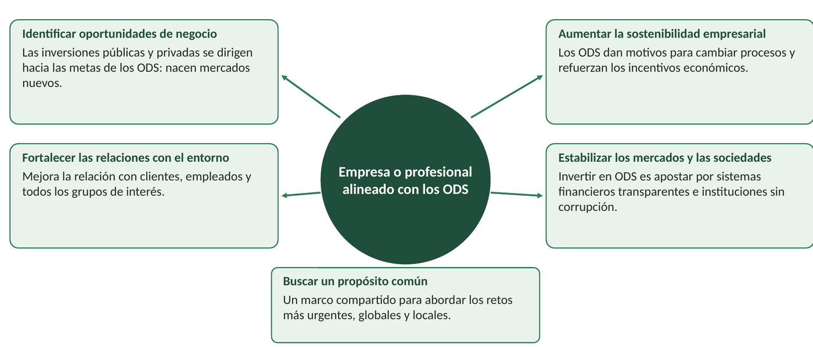
Idea clave.
Los ODS son a la vez una responsabilidad y una oportunidad de negocio.
1.5. Riesgos y oportunidades de los ODS
Los ODS no son solo ventajas. Para una empresa suponen dos tipos de riesgo:
- Riesgo de no actuar. El mundo cambia (leyes, clientes, precios de la energía y de los materiales) y la empresa que no se adapta se queda atrás.
- Riesgo de actuar mal. El ODS-washing (parecido al «greenwashing» o «lavado verde») consiste en poner los logos de los ODS en la web, en los productos o en la publicidad sin acciones reales detrás. Si clientes o periodistas lo descubren, la imagen de la empresa queda muy dañada.
La buena noticia es que casi cada riesgo tiene su oportunidad para la empresa que se adelanta. Esta tabla lo aplica a una empresa del sector TIC:
| Ámbito | Riesgo (si no actúa o actúa mal) | Oportunidad (si se adelanta) |
|---|---|---|
| Normativa | Nuevas obligaciones (RAEE, ecodiseño, protección de datos) y sanciones si no se cumplen. | Quien se adelanta puede ofrecer a otros servicios para cumplirlas. |
| Clientes | Perder clientes y concursos públicos que exigen criterios de sostenibilidad. | Ganar clientes concienciados y ser proveedor de empresas grandes que lo exigen. |
| Costes | Inversión inicial en equipos eficientes, formación y cambios de proceso. | Ahorro de energía, materiales y averías a medio plazo. |
| Reputación | «ODS-washing»: presumir de ODS sin hacer nada y sufrir una crisis de imagen. | Mejor imagen de marca y más confianza de clientes y vecinos. |
| Recursos | Componentes y energía más escasos y caros. | Nuevos negocios: reparación, reacondicionamiento, eficiencia energética. |
| Talento | Dificultad para atraer y retener a gente joven. | Atraer a profesionales que quieren trabajar en empresas responsables. |
Se lee por filas: en cada ámbito, el mismo cambio puede hundir a una empresa o hacerla crecer.
Pregunta flash (2 min).
Vuelve a la propuesta de Andrés: «pon los 17 logos en la web». ¿Qué riesgo corre el taller si lo hace así? ¿Y qué oportunidad pierde? (Se trabaja a fondo en la práctica P1.)
Idea clave.
Un riesgo que se gestiona a tiempo se convierte en una oportunidad.
2. Los 17 ODS en la actividad empresarial y profesional
La Agenda 2030 fue aprobada por la ONU en 2015. Tiene 17 Objetivos de Desarrollo Sostenible y 169 metas concretas que hay que alcanzar antes de 2030. Los ODS son universales (para todos los países), están conectados (avanzar en uno ayuda a otros) y buscan que nadie se quede atrás.
Se agrupan en cinco esferas, las «5 P»: Personas, Prosperidad, Planeta, Paz y Alianzas (en inglés, «Partnership»). De cada ODS veremos tres cosas: en qué consiste, cómo puede actuar una empresa y qué puede hacer un técnico de SMR. Al final de cada esfera hay una tabla resumen.
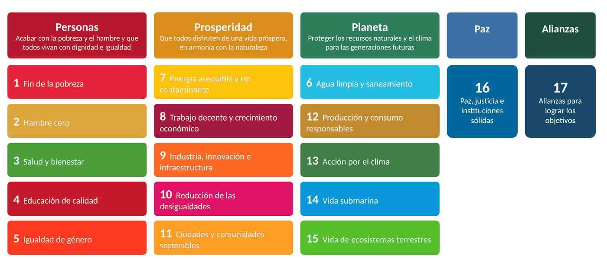
2.1. Esfera Personas (ODS 1 a 5)
Objetivo de la esfera: acabar con la pobreza y el hambre y que todos vivan con dignidad e igualdad.
ODS 1. Fin de la pobreza
Según el libro, cerca de 800 millones de personas viven en la pobreza extrema y no tienen acceso seguro al agua ni a los alimentos.
¿En qué consiste? Poner fin a la pobreza en todas sus formas: ingresos y salarios suficientes, protección social y acceso a los recursos y a la propiedad.
¿Cómo puede actuar la empresa? Adaptar el modelo de negocio para cooperar con el entorno local en lugar de competir; pagar salarios dignos; apoyar proyectos de acción social y voluntariado.
¿Y un técnico de SMR? Reacondicionar equipos que se iban a tirar y donarlos a familias sin recursos; ayudar a hacer online los trámites de ayudas como el bono social o el ingreso mínimo vital.
Ejemplo. Administraciones y empresas eléctricas colaboran para no cortar el suministro a familias vulnerables: es la lucha contra la pobreza energética.
ODS 2. Hambre cero
Según el libro, unos 795 millones de personas sufren desnutrición crónica, sobre todo por sequías, calentamiento global y pérdida de biodiversidad.
¿En qué consiste? Acabar con el hambre y la malnutrición antes de 2030, garantizar la seguridad alimentaria y desarrollar una agricultura sostenible y productiva.
¿Cómo puede actuar la empresa? Analizar la cadena de valor para conocer el origen de lo que compran (trazabilidad); donar excedentes de comida; financiar la agricultura sostenible.
¿Y un técnico de SMR? Instalar sensores y aplicaciones de agricultura de precisión y de trazabilidad para las cooperativas; montar la tienda online de un productor local.
Ejemplo. Los empleados de Iberdrola han donado más de 20.400 kg de alimentos desde 2012. Bares y restaurantes donan excedentes a comedores sociales.
ODS 3. Salud y bienestar
Según el libro, alrededor de seis millones de niños mueren cada año antes de cumplir cinco años.
¿En qué consiste? Garantizar una vida sana y segura y promover el bienestar de todas las personas, a todas las edades.
¿Cómo puede actuar la empresa? Crear entornos de trabajo seguros (prevención de riesgos laborales), fomentar hábitos saludables y apoyar la investigación y las asociaciones de salud.
¿Y un técnico de SMR? Cuidar la ergonomía del puesto (pantalla, silla, pausas), trabajar sin tensión al montar equipos y respetar la desconexión digital; apoyar la teleasistencia y la cita previa online.
Ejemplo. El grupo Quirónsalud promueve con su «Espacio de comida saludable» menús sanos para sus trabajadores.
ODS 4. Educación de calidad
Los conflictos armados y la diferencia entre el campo y la ciudad hacen que millones de estudiantes reciban una educación peor o la abandonen.
¿En qué consiste? Una educación inclusiva, equitativa y de calidad, y oportunidades de aprender durante toda la vida. Para la ONU es el hilo conductor del resto de ODS.
¿Cómo puede actuar la empresa? Formar a sus empleados, conceder becas y colaborar con institutos y universidades (por ejemplo, acogiendo alumnado en formación en empresa).
¿Y un técnico de SMR? Seguir formándose (cursos, certificaciones) y enseñar competencias digitales a clientes, mayores y compañeros; crear materiales accesibles.
Ejemplo. Al acabar la FP tendrás que seguir formándote y reciclarte en nuevas técnicas para ejercer tu profesión de forma eficiente.
ODS 5. Igualdad de género
La desigualdad de género existe en todos los países: acceso al empleo, violencia y explotación, brecha salarial y pocas mujeres en puestos de responsabilidad.
¿En qué consiste? Eliminar toda forma de discriminación contra mujeres y niñas, valorar el trabajo de cuidados no remunerado y lograr su empoderamiento.
¿Cómo puede actuar la empresa? Reducir la brecha salarial, aplicar planes de igualdad y permisos de paternidad igualitarios y facilitar la conciliación de la vida familiar y laboral.
¿Y un técnico de SMR? Usar lenguaje e imágenes no sexistas, animar a las chicas a estudiar informática y no tolerar comentarios machistas en el trabajo ni en las redes.
Ejemplo. El Instituto de las Mujeres, del Ministerio de Igualdad, mantiene observatorios sobre la igualdad y sobre la imagen de las mujeres.
Referentes: mujeres en la tecnología y la sostenibilidad
Radia Perlman, ingeniera de redes estadounidense, inventó el protocolo STP (Spanning Tree), que evita los bucles en las redes de switches.
Hedy Lamarr, actriz e inventora, patentó en 1942 con George Antheil un sistema de salto de frecuencia, base de técnicas usadas después en comunicaciones inalámbricas.
Wangari Maathai, bióloga keniana, fundó el Movimiento Cinturón Verde, que plantó millones de árboles. Premio Nobel de la Paz en 2004.
Elena García Armada, ingeniera española del CSIC, creó el primer exoesqueleto infantil para niños con atrofia muscular espinal.
| ODS | Qué puede hacer un técnico de SMR |
|---|---|
| 1. Fin de la pobreza | Reacondicionar equipos que se iban a tirar y donarlos a familias sin recursos; ayudar a hacer online los trámites de ayudas como el bono social o el ingreso mínimo vital. |
| 2. Hambre cero | Instalar sensores y aplicaciones de agricultura de precisión y de trazabilidad para las cooperativas; montar la tienda online de un productor local. |
| 3. Salud y bienestar | Cuidar la ergonomía del puesto (pantalla, silla, pausas), trabajar sin tensión al montar equipos y respetar la desconexión digital; apoyar la teleasistencia y la cita previa online. |
| 4. Educación de calidad | Seguir formándose (cursos, certificaciones) y enseñar competencias digitales a clientes, mayores y compañeros; crear materiales accesibles. |
| 5. Igualdad de género | Usar lenguaje e imágenes no sexistas, animar a las chicas a estudiar informática y no tolerar comentarios machistas en el trabajo ni en las redes. |
Pregunta flash (2 min).
De los ODS 1 a 5, ¿cuál crees que tiene más relación con tu futuro trabajo? Explica por qué con un ejemplo concreto.
2.2. Esfera Prosperidad (ODS 7 a 11)
Objetivo de la esfera: que todos disfruten de una vida próspera, en armonía con la naturaleza.
ODS 7. Energía asequible y no contaminante
La mayor parte de la energía que usamos aún procede de combustibles fósiles, que se agotan, son cada vez más caros y calientan el planeta.
¿En qué consiste? Acceso universal a la energía y cambio a fuentes renovables. Recuerda: la energía más sostenible es la que no se usa.
¿Cómo puede actuar la empresa? Analizar sus procesos para gastar menos, medir su huella de carbono y pasarse a energías renovables y a vehículos menos contaminantes.
¿Y un técnico de SMR? Configurar la suspensión y el apagado automático, virtualizar servidores y recomendar equipos eficientes (lo que calculamos en la ficha de consumo de la UT2).
Ejemplo. El libro lo dice claro: programar los equipos informáticos (apagado, suspensión) es una medida al alcance de empresas y personas.
ODS 8. Trabajo decente y crecimiento económico
Muchas personas trabajan en malas condiciones, y la robotización destruye empleos repetitivos mientras crea otros nuevos.
¿En qué consiste? Crecimiento económico inclusivo y empleo digno para todos, con posibilidades de progresar, también para colectivos vulnerables.
¿Cómo puede actuar la empresa? Respetar los derechos laborales, ofrecer formación permanente y vigilar que en su cadena de suministro no haya trabajos de alta penosidad.
¿Y un técnico de SMR? Conocer tu convenio y tus derechos, respetar la desconexión digital, comprar a fabricantes que controlan el origen de sus minerales y formarte ante la automatización.
Ejemplo. Algunas empresas usan la gamificación para fijar objetivos compartidos entre departamentos y mejorar el clima laboral.
ODS 9. Industria, innovación e infraestructura
El libro habla de más de 4.000 millones de personas sin internet; hoy la UIT estima unos 2.600 millones: siguen siendo muchísimas.
¿En qué consiste? Construir infraestructuras resilientes (que resistan y se recuperen), una industria sostenible y fomentar la innovación.
¿Cómo puede actuar la empresa? Invertir en investigación e innovación, colaborar con startups y universidades y apostar por la digitalización.
¿Y un técnico de SMR? Es el ODS más propio del técnico de redes: instalar y mantener redes fiables y seguras, llevar conectividad a zonas rurales y documentar bien las instalaciones.
Ejemplo. EDP prevé invertir 2.000 millones de euros en innovación y digitalización e instalar contadores inteligentes en toda la península.
ODS 10. Reducción de las desigualdades
Según el libro, el 10 % más rico de la población mundial obtiene en torno al 40 % de toda la renta.
¿En qué consiste? Reducir las desigualdades entre países y dentro de cada país, incluida la brecha salarial.
¿Cómo puede actuar la empresa? Ofrecer los mismos salarios y oportunidades de ascenso en la misma categoría, invertir en países emergentes y usar la tecnología para igualar.
¿Y un técnico de SMR? Hacer webs y documentos accesibles (contraste, texto alternativo, lectores de pantalla), instalar tecnologías de apoyo y combatir la brecha digital.
Ejemplo. El acceso a la tecnología es hoy uno de los factores que más contribuyen a la igualdad de las personas con discapacidad.
ODS 11. Ciudades y comunidades sostenibles
Se calcula que en 2050 más de dos tercios de la población mundial vivirá en ciudades.
¿En qué consiste? Ciudades y pueblos seguros, verdes y con buenos servicios de vivienda, energía y transporte.
¿Cómo puede actuar la empresa? Crear planes de movilidad para sus empleados, hacer sus edificios eficientes y participar en proyectos de ciudad inteligente.
¿Y un técnico de SMR? Instalar domótica y sistemas de gestión de edificios, redes wifi municipales y teletrabajo; en el valle, la conectividad ayuda a que los pueblos no se vacíen.
Ejemplo. La Ley 7/2021 de Cambio Climático obliga a los municipios de más de 50.000 habitantes a crear zonas de bajas emisiones.
| ODS | Qué puede hacer un técnico de SMR |
|---|---|
| 7. Energía asequible y no contaminante | Configurar la suspensión y el apagado automático, virtualizar servidores y recomendar equipos eficientes (lo que calculamos en la ficha de consumo de la UT2). |
| 8. Trabajo decente y crecimiento económico | Conocer tu convenio y tus derechos, respetar la desconexión digital, comprar a fabricantes que controlan el origen de sus minerales y formarte ante la automatización. |
| 9. Industria, innovación e infraestructura | Es el ODS más propio del técnico de redes: instalar y mantener redes fiables y seguras, llevar conectividad a zonas rurales y documentar bien las instalaciones. |
| 10. Reducción de las desigualdades | Hacer webs y documentos accesibles (contraste, texto alternativo, lectores de pantalla), instalar tecnologías de apoyo y combatir la brecha digital. |
| 11. Ciudades y comunidades sostenibles | Instalar domótica y sistemas de gestión de edificios, redes wifi municipales y teletrabajo; en el valle, la conectividad ayuda a que los pueblos no se vacíen. |
Pregunta flash (2 min).
El ODS 9 es «el del técnico de redes». ¿Qué instalación o configuración que hayas hecho en el ciclo contribuye al ODS 9? ¿Y al ODS 7? (Fin de la sesión T1.)
Sesión teórica T2 (55 min): apartados 2.3 a 2.7 y apartado 3. Termina con una comprobación de 5 minutos.
2.3. Esfera Planeta (ODS 6, 12, 13, 14 y 15)
Objetivo de la esfera: proteger los recursos naturales y el clima para las generaciones futuras.
ODS 6. Agua limpia y saneamiento
Según el libro, en 2022 unos 2.200 millones de personas no tenían agua potable segura y 3.500 millones carecían de saneamiento seguro.
¿En qué consiste? Garantizar el acceso al agua potable y al saneamiento y proteger los ecosistemas de agua dulce.
¿Cómo puede actuar la empresa? Calcular su huella hídrica (el agua que consume), reducir vertidos químicos y usar riego inteligente.
¿Y un técnico de SMR? Instalar sensores para detectar fugas o regar solo cuando hace falta; alargar la vida de los equipos, porque fabricar chips y refrigerar centros de datos gasta mucha agua.
Ejemplo. Aquara gestiona el ciclo integral del agua en municipios de Aragón con criterios de economía circular.
ODS 12. Producción y consumo responsables
Los hogares y las empresas de los países desarrollados generan enormes cantidades de residuos; hay que reducir a la mitad el desperdicio de alimentos antes de 2030.
¿En qué consiste? Producir y consumir usando menos recursos y energía y gestionar bien los residuos, sobre todo los tóxicos. Aquí entra la economía circular.
¿Cómo puede actuar la empresa? Planificar la gestión de sus residuos, aplicar la economía circular y exigir criterios sostenibles a sus proveedores.
¿Y un técnico de SMR? El ODS más directo del técnico: reparar y ampliar antes de sustituir, llevar los RAEE a un gestor autorizado, comprar reacondicionado y reciclar el tóner.
Ejemplo. Cambiar bombillas y luminarias por otras de bajo consumo puede ahorrar entre el 50 % y el 80 % de energía, según el libro.
ODS 13. Acción por el clima
Olas de calor, sequías, ciclones y heladas fuera de época afectan cada vez más a empresas y sociedades.
¿En qué consiste? Cumplir el Acuerdo de París (COP21, 2015): reducir los gases de efecto invernadero y limitar el calentamiento a 1,5 °C.
¿Cómo puede actuar la empresa? Informar a sus grupos de interés sobre los riesgos climáticos, innovar para emitir menos y fijar indicadores para medir sus objetivos.
¿Y un técnico de SMR? Medir y reducir la huella de carbono digital, elegir servicios en la nube con energía renovable y preparar los sistemas ante olas de calor (refrigeración, copias de seguridad).
Ejemplo. El grupo Freixenet ha mejorado sus procesos de depuración para contaminar menos el agua.
ODS 14. Vida submarina
El agua cubre más del 70 % del planeta, y más de 3.000 millones de personas dependen de la biodiversidad marina y costera para vivir.
¿En qué consiste? Proteger mares y océanos y su biodiversidad, sobre todo frente a los plásticos y la contaminación.
¿Cómo puede actuar la empresa? Reducir el plástico de envases y materiales y aplicar las 3R: reducir, reutilizar y reciclar.
¿Y un técnico de SMR? Evitar embalajes de plástico en las compras de material y no tirar aparatos a la basura: sus metales pesados acaban en el agua.
Ejemplo. Iberdrola participa en iniciativas de limpieza de océanos y costas.
ODS 15. Vida de ecosistemas terrestres
La degradación de la tierra, la sequía y la desertificación aumentan cada año y provocan la extinción de muchas especies.
¿En qué consiste? Proteger y recuperar bosques y suelos, frenar la desertificación y la pérdida de biodiversidad.
¿Cómo puede actuar la empresa? Comprar materias primas con sellos de origen sostenible y fomentar el reciclaje con contenedores específicos (pilas, aceite, tóner…).
¿Y un técnico de SMR? Alargar la vida de los equipos (la minería de metales destruye ecosistemas), poner contenedores de pilas y tóner y apoyar sensores para prevenir incendios.
Ejemplo. La aseguradora Solunion organiza voluntariados de limpieza y reforestación.
| ODS | Qué puede hacer un técnico de SMR |
|---|---|
| 6. Agua limpia y saneamiento | Instalar sensores para detectar fugas o regar solo cuando hace falta; alargar la vida de los equipos, porque fabricar chips y refrigerar centros de datos gasta mucha agua. |
| 12. Producción y consumo responsables | El ODS más directo del técnico: reparar y ampliar antes de sustituir, llevar los RAEE a un gestor autorizado, comprar reacondicionado y reciclar el tóner. |
| 13. Acción por el clima | Medir y reducir la huella de carbono digital, elegir servicios en la nube con energía renovable y preparar los sistemas ante olas de calor (refrigeración, copias de seguridad). |
| 14. Vida submarina | Evitar embalajes de plástico en las compras de material y no tirar aparatos a la basura: sus metales pesados acaban en el agua. |
| 15. Vida de ecosistemas terrestres | Alargar la vida de los equipos (la minería de metales destruye ecosistemas), poner contenedores de pilas y tóner y apoyar sensores para prevenir incendios. |
2.4. Esfera Paz (ODS 16)
Objetivo de la esfera: sociedades pacíficas, justas e inclusivas.
ODS 16. Paz, justicia e instituciones sólidas
Sin paz, sin justicia y sin instituciones eficaces y transparentes no puede haber desarrollo sostenible.
¿En qué consiste? Sociedades pacíficas e inclusivas, acceso a la justicia e instituciones eficaces, transparentes y sin corrupción.
¿Cómo puede actuar la empresa? Aprobar códigos éticos y exigirlos a toda su cadena de suministro, ser transparentes con la información y cooperar en zonas de conflicto.
¿Y un técnico de SMR? Proteger los datos personales (RGPD), garantizar la ciberseguridad, usar software legal, guardar la confidencialidad y no difundir bulos.
Ejemplo. El Portal de la Transparencia del Gobierno de España publica información de la Administración para la ciudadanía.
2.5. Esfera Alianzas (ODS 17)
Objetivo de la esfera: trabajar juntos para conseguirlo.
ODS 17. Alianzas para lograr los objetivos
Ningún país, empresa o persona puede alcanzar los ODS por su cuenta.
¿En qué consiste? Colaborar a escala mundial entre el sector público, el privado y la sociedad civil. Está relacionado con los otros 16 ODS.
¿Cómo puede actuar la empresa? Crear alianzas público-privadas (wifi gratuito, transporte, salud) y con comunidades locales y ONG; cooperar en lugar de competir.
¿Y un técnico de SMR? Colaborar con ayuntamientos y asociaciones (puntos de inclusión digital), compartir conocimiento (software libre, foros) y trabajar en red con otras empresas.
Ejemplo. El grupo farmacéutico Menarini firmó el Pacto Mundial de la ONU y se compromete con los ODS en su actividad diaria.
2.6. ¿Qué ODS son los más relevantes para un técnico de SMR?
Los 17 ODS nos afectan a todos, pero no con la misma intensidad. Para priorizar, la pregunta es: ¿en cuáles influyen directamente mis decisiones? Proponemos tres niveles:
- Impacto directo (ODS 7, 9 y 12): dependen de lo que hago en mi puesto: qué equipo instalo o recomiendo, cómo lo configuro y qué hago con el equipo viejo.
- Impacto cercano (ODS 3, 4, 5, 8, 10, 13 y 16): dependen de cómo trabajo y de cómo trato a las personas: salud laboral, formación, igualdad, empleo digno, accesibilidad, huella de carbono y protección de datos.
- Impacto indirecto (ODS 1, 2, 6, 11, 14, 15 y 17): los alcanzo a través de clientes, proveedores y alianzas, aunque no los toque cada día.
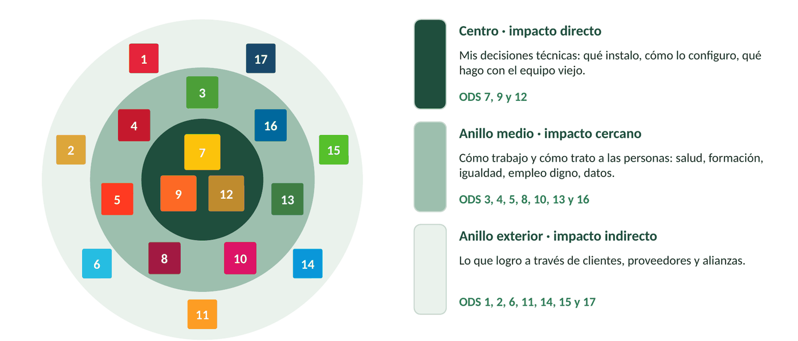
Idea clave.
Priorizar no es olvidar el resto: es empezar por donde más puedo influir.
2.7. Los ODS están conectados: la educación como palanca
Los ODS no van por separado: avanzar en uno empuja a otros. Para la ONU, el ODS 4 (educación de calidad) es el gran hilo conductor del resto.
Cuando acabes el ciclo de FP tendrás unas competencias que te permitirán trabajar por tu cuenta o en una empresa, pero seguirás recibiendo formación durante toda tu vida. Esa formación no solo te sirve a ti: una educación de calidad informa sobre hábitos saludables (ODS 3), extiende las políticas de igualdad (ODS 5), es el motor de la concienciación ambiental (ODS 13, 14 y 15) y da acceso a mejores empleos y salarios (ODS 8 y 10).
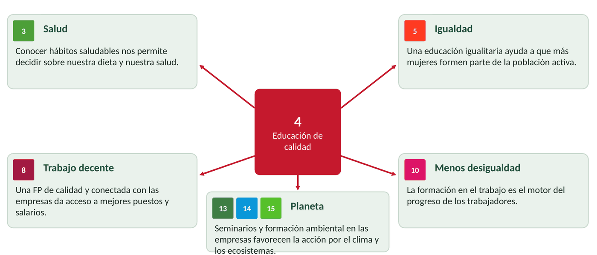
Pregunta flash (2 min).
Mira la diana. ¿Moverías algún ODS a otro anillo? Por ejemplo, ¿el ODS 16 (datos, ciberseguridad) debería estar en el centro para un técnico de SMR? Justifícalo.
3. Acciones a tu alcance
Como futuro profesional debes tomar tus propias medidas para avanzar en los ODS. Aunque te parezcan pequeñas acciones, puedes imitar a las grandes empresas comprometidas con la sostenibilidad. Y lo que hace un técnico se multiplica: cada configuración, cada equipo reparado y cada recomendación se repite en cientos de equipos a lo largo de su carrera.
3.1. Tus círculos de influencia
Tu influencia funciona como círculos: empieza en ti, llega a tu puesto y a tu empresa, y alcanza a tus clientes y a tu comunidad. Cuanto más lejos del centro, más personas implica cada acción, pero también hace falta convencer a más gente.
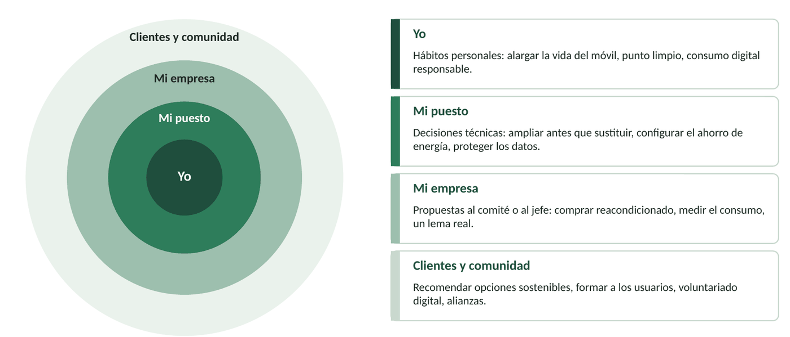
3.2. Acciones en el trabajo de un técnico de SMR
Todas son tareas que ya sabes hacer en el ciclo; la diferencia es hacerlas con criterio de sostenibilidad.
| Área | Acción concreta | ODS |
|---|---|---|
| Energía | Configurar suspensión y apagado automático; virtualizar servidores; elegir equipos eficientes | 7, 13 |
| Equipos y residuos | Reparar y ampliar (SSD, RAM, batería) antes de sustituir; RAEE a gestor autorizado; comprar reacondicionado | 12, 15 |
| Redes e infraestructura | Redes fiables, seguras y documentadas; conectividad en zonas rurales | 9, 11 |
| Seguridad y datos | Copias de seguridad, contraseñas robustas, RGPD, software legal, confidencialidad | 16 |
| Accesibilidad e inclusión | Webs y documentos accesibles; tecnologías de apoyo; formar a usuarios | 4, 10 |
| Personas y trabajo | Ergonomía y pausas; desconexión digital; trato igualitario; formación continua | 3, 5, 8 |
3.3. Acciones en tu vida personal
| Ámbito | Acción concreta | ODS |
|---|---|---|
| Mis dispositivos | Usar el móvil 4 años o más, cambiar la batería en vez del móvil, comprar reacondicionado | 12 |
| Mi consumo digital | Descargar con wifi, ajustar la calidad del streaming, borrar lo que no uso de la nube | 7, 13 |
| Mis residuos | Pilas, cables y aparatos al punto limpio o a la tienda; separar envases | 12, 14, 15 |
| Mi movilidad y alimentación | Caminar, bici o transporte compartido; producto local y de temporada (km 0) | 11, 13, 2 |
| Mi entorno | Ayudar a familiares y vecinos con trámites digitales; voluntariado; no difundir bulos | 10, 16, 17 |
| Mi bienestar y aprendizaje | Pausas de pantalla, descanso, aprender por mi cuenta | 3, 4 |
3.4. Del dicho al hecho: metas SMART
«Voy a ser más sostenible» es una buena intención, pero no es una meta: no se sabe qué hay que hacer ni cuándo se ha cumplido. Una meta SMART es una acción escrita de forma que se pueda cumplir y comprobar. Las letras vienen del inglés: Specific, Measurable, Achievable, Relevant, Time-bound.
| Letra | Significa | Pregunta que responde |
|---|---|---|
| S | Específica | ¿Qué haré exactamente? |
| M | Medible | ¿Cómo sabré que lo he hecho? ¿Con qué número? |
| A | Alcanzable | ¿Está a mi alcance, con mis medios y mi tiempo? |
| R | Relevante | ¿Ayuda de verdad a un ODS que he priorizado? |
| T | Temporal | ¿Para cuándo? ¿Cuándo lo reviso? |
Ejemplo. Mal: «Ahorrar energía». Bien: «Configurar la suspensión a 10 minutos en los 3 ordenadores de casa antes del 20 de diciembre».
Las empresas hacen lo mismo con sus objetivos de sostenibilidad: los acompañan de indicadores para medir si avanzan. Un plan de acción sigue siempre el mismo ciclo:
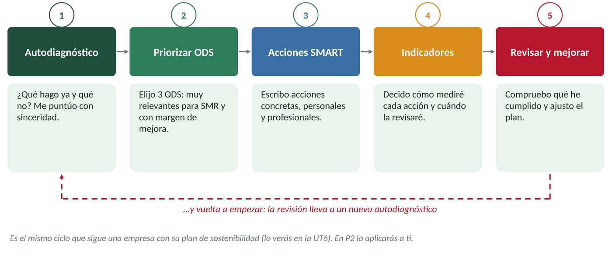
Idea clave.
Si no se puede medir, no se puede saber si lo has conseguido.
Comprobación de T2: ¿son metas SMART? (5 minutos, al final de la sesión)
Di qué letra falla en cada una y reescríbela:
- «Voy a reciclar más.»
- «Dejaré de usar el móvil para siempre a partir de mañana.»
- «Antes del 31 de enero llevaré al punto limpio los 2 móviles viejos y los cables que tengo en casa.»
- «Configuraré la suspensión en los equipos del aula.»
- «Este trimestre veré 3 tutoriales sobre accesibilidad web y aplicaré lo aprendido en mi próxima página.»
Ver solución
1 falla S, M y T; 2 falla A (no es alcanzable ni razonable); 3 es SMART; 4 falla M y T (¿a cuántos minutos?, ¿cuándo?); 5 es SMART.
4. Sesiones prácticas
Cada sesión práctica aplica lo explicado en la hora de teoría anterior y dura 55 minutos. Cada una tiene su ficha en Word para el alumnado (con espacios para responder) y su solucionario.
P1. Riesgos y oportunidades de los ODS en una empresa TIC (tras T1)
Objetivo: identificar ODS en una empresa del sector (CE a) y analizar sus riesgos y oportunidades (CE b). Organización: por parejas. Material: ficha P1.
| Tiempo | Parte | Qué se hace |
|---|---|---|
| 5 min | Arranque | Recordar las respuestas de la Actividad 0 y la propuesta de Andrés |
| 20 min | A. Los ODS de ValleNet | Leer el caso e identificar qué ODS favorece cada acción |
| 20 min | B. Riesgos y oportunidades | Analizar los puntos débiles y completar la matriz de riesgos y oportunidades |
| 10 min | C. Propuestas y lema | Proponer dos acciones nuevas y un lema; puesta en común |
El caso. ValleNet Soluciones, SL es una pequeña empresa (ficticia) de Navaconcejo con 6 trabajadores que mantiene los equipos y las redes de cooperativas, ayuntamientos y alojamientos rurales, hace páginas web y da cursos. La ficha describe siete acciones sostenibles y cuatro puntos débiles (furgonetas diésel, venta de portátiles de gama muy baja, no mide su consumo y presume de los 17 ODS en la web sin explicar qué hace).
Entrega: la ficha P1, por parejas, en Classroom (actividad de clase).
P2. Autodiagnóstico y plan de acción personal: caso práctico del RA3 (tras T2)
Objetivo: aplicar criterios de sostenibilidad a tu propio desempeño (CE a, b y c). Organización: individual. Material: ficha P2. Es el producto evaluable de la unidad.
| Tiempo | Parte | Qué se hace |
|---|---|---|
| 5 min | Arranque | Explicación de la ficha y de la rúbrica |
| 15 min | A. Autodiagnóstico | Responder los 20 ítems (0, 1 o 2 puntos) y sumar por bloques |
| 10 min | B. Priorizar 3 ODS | Cruzar la diana de SMR con mis puntuaciones en la matriz de prioridad |
| 20 min | C. Plan de acción | 6 acciones SMART con ODS, indicador y fecha; riesgo y oportunidad de cada ODS elegido |
| 5 min | Compromiso | Elegir la primera acción que cumpliré esta semana y entregar |
El autodiagnóstico tiene cuatro bloques de cinco preguntas: A. Energía y equipos (ODS 7 y 13), B. Consumo y residuos (ODS 12, 14 y 15), C. Digital responsable (ODS 9 y 16) y D. Personas y entorno (ODS 3, 4, 5, 8 y 10). Cada bloque vale 10 puntos: de 0 a 4, mucho margen de mejora; de 5 a 7, vas bien; de 8 a 10, eres un referente.
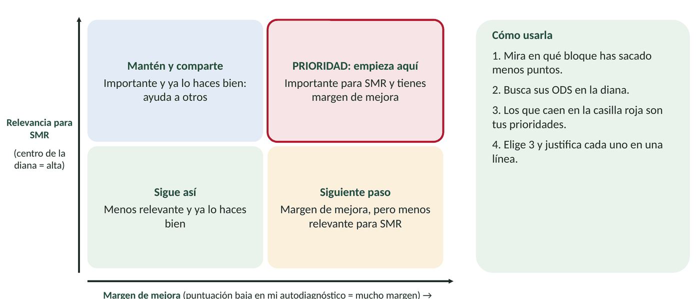
El plan tiene 6 acciones SMART: al menos 2 personales, 2 profesionales y una que implique a otras personas (familia, clase, empresa o asociación). En la primera sesión de enero, al empezar la UT4, se revisará cuántas se han cumplido.
Cómo se evalúa
| Criterio | Peso | Qué se valora |
|---|---|---|
| Autodiagnóstico | 10 % | Completo, sincero y con la suma por bloques |
| ODS prioritarios (CE a) | 25 % | Tres ODS bien elegidos con la matriz y justificados con el trabajo de SMR |
| Riesgos y oportunidades (CE b) | 20 % | Un riesgo y una oportunidad realistas para cada ODS elegido |
| Acciones (CE c) | 35 % | Seis acciones SMART, al alcance, variadas (personal, profesional, alianza) y con indicador |
| Presentación y reflexión | 10 % | Ficha clara y respuesta razonada a la pregunta final |
5. Resumen, glosario y autoevaluación
5.1. Ideas clave
- La sostenibilidad empresarial tiene en cuenta los criterios ASG y es rentable a medio y largo plazo, aunque al principio cueste.
- La cultura de sostenibilidad implica a toda la plantilla: un comité que analiza, actúa y audita, y tres palancas (ambiente favorable, capacitación y campañas).
- Alinearse con los ODS trae beneficios (oportunidades de negocio, relaciones con el entorno, imagen) y exige gestionar riesgos, incluido el ODS-washing.
- Los 17 ODS se agrupan en las 5 P. Para un técnico de SMR, los de impacto directo son el 7, el 9 y el 12.
- Los ODS están conectados: la educación (ODS 4) empuja a muchos otros.
- Tus acciones, personales y profesionales, se convierten en un plan cuando son metas SMART con indicador y fecha.
5.2. Glosario
| Término | Definición breve |
|---|---|
| Agenda 2030 | Plan de la ONU (2015) con 17 ODS y 169 metas para 2030 |
| ASG | Criterios ambientales, sociales y de gobernanza |
| Comité de sostenibilidad | Grupo de la empresa que analiza, propone y audita las mejoras sostenibles |
| Cultura de sostenibilidad | Valores y hábitos que hacen que toda la empresa trabaje de forma sostenible |
| Grupos de interés (stakeholders) | Personas y entidades afectadas por la empresa: clientes, empleados, proveedores, vecinos… |
| Huella hídrica / de carbono | Agua consumida / gases de efecto invernadero emitidos por una actividad |
| Meta SMART | Acción específica, medible, alcanzable, relevante y con fecha |
| ODS-washing | Presumir de contribuir a los ODS sin acciones reales detrás |
| Sostenibilidad profesional | Aplicar criterios de sostenibilidad a las decisiones de tu puesto de trabajo |
| Trazabilidad | Poder conocer el origen y el recorrido de un producto o material |
5.3. Autoevaluación
- ¿Por qué al principio un plan de sostenibilidad reduce el beneficio y después lo aumenta?
- ¿Qué tres tareas realiza un comité de sostenibilidad? ¿Y cuáles son sus tres palancas?
- Nombra tres ventajas de un plan de cultura de sostenibilidad y cuatro beneficios de alinearse con los ODS.
- ¿Qué es el ODS-washing? Pon un ejemplo del sector informático.
- Nombra las 5 P de la Agenda 2030 y un ODS de cada una.
- ¿Por qué se dice que el ODS 4 es una palanca para el resto? Relaciónalo con dos ODS.
- Indica los tres ODS de impacto directo para un técnico de SMR y una acción para cada uno.
- Según el libro, ¿con qué otros ODS se relaciona el ODS 13 (acción por el clima)?
- Pon un riesgo y una oportunidad que supone el ODS 12 para una tienda de informática.
- Convierte en meta SMART: «Voy a reciclar más».
Para cerrar: recuperad vuestras respuestas de la Actividad 0. ¿Qué debería contestar Nerea a la cooperativa? ¿Bastan los 17 logos? ¿Qué tres ODS elegiríais para el taller y qué acciones pondríais?
Fuentes del material
Elaborado a partir del Tema 3 («Los ODS en el desempeño profesional y personal») del libro Sostenibilidad aplicada al sistema productivo (Editex), la Guía Docente del módulo y la programación de 1708 SASP de 2º SMR (curso 2026-27). Los ejemplos de empresas del libro se citan tal como aparecen en él. La empresa ValleNet y los personajes son ficticios. Los datos añadidos fuera del libro (por ejemplo, la cifra de personas sin internet de la UIT y los referentes femeninos) conviene comprobarlos antes de usarlos en clase.